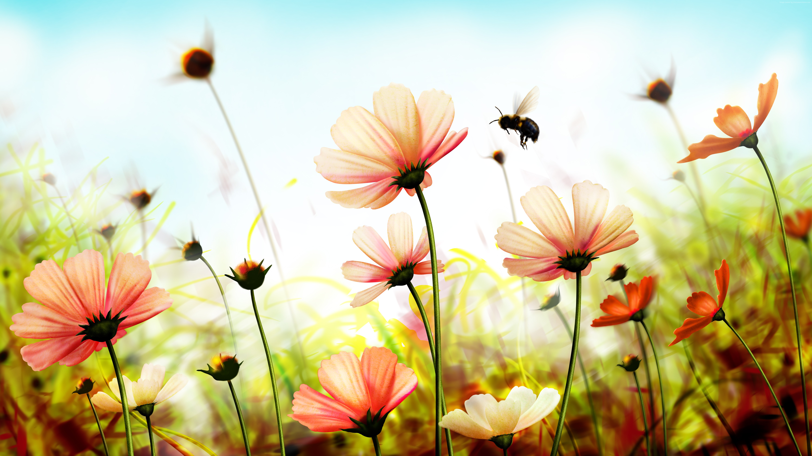
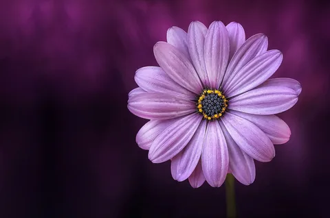

flower

developing flower, petals that attract pollinators, and reproductive
organs that produce gametophytes, which in
flowering plants produce gametes.
Most flowering plants depend on animals, such as bees, moths, and butterflies, to transfer their pollen between
different flowers,
and have evolved to attract these pollinators by various strategies, including brightly
colored,
conspicuous petals, attractive scents,
and the production of nectar, a food source for pollinators.

When pollen from the anther of a flower is deposited on the stigma, this is called pollination. Some flowers may
self-pollinate, producing seed using pollen
from a different flower of the same plant, but others have
mechanisms to
prevent self-pollination and rely on cross-pollination,
when pollen is transferred from the anther of one
flower to
the stigma of another flower on a different individual of the same species